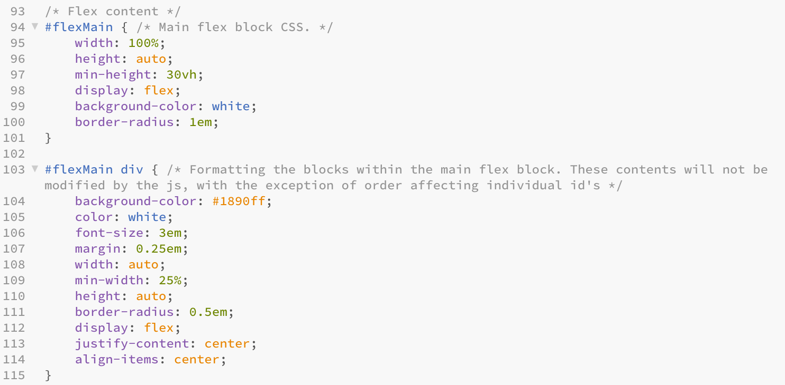
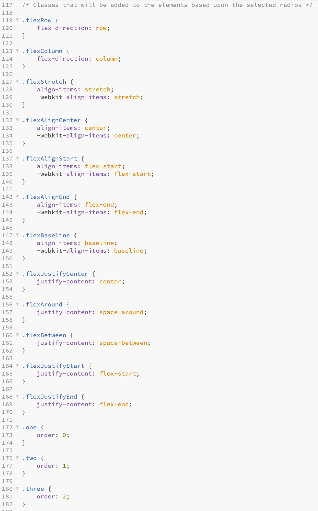
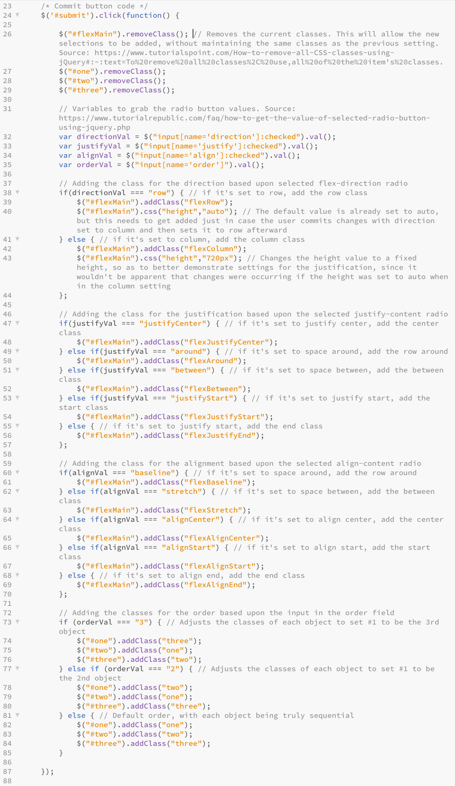

"Flex" objects are a modern format for handling content on webpages with simple CSS. As opposed to things like "float" and "table," a flex object offers flexibility in seamless manner, allowing for easy handling of things that are difficult with alternatives, such as true vertical centering of blocks with a simple property and value setting, multi-column layouts with variously sized objects, content wrapping without breakpoints, and re-ordering of objects with CSS and little to no modification to the HTML.
In this lesson, using a form you will be able to adjust the contents of the flex container above. While only a handful of the properties and values that are part of flex's capabilities can be altered, a wide variety of layout options are available to adjust through the form, with a wide array of combinations to choose from.
Navigating to the next tab will bring you to a simple form, where you may toggle between a few different options, then click the "Commit Changes" button in order to alter the content above! Clicking the "Cancel Changes" button will revert the options and the content back to the way things were when you first accessed the page.
Putting it all together
I hope that you had fun messing with this page! I would like for this to be a good learning experience about the capabilities of flex objects, without having to look at the code. The flexibility that flex objects have to offer, especially when pairing them together to form parent-child relationships, makes for a phenomenal layout tool!
If you would like to see the code that makes this all work, it will be as follows. Additionally, this is your warning: if you do not wish to see any code, do not click the button.
You have done well to make it this far... Now, on to the code.
Thanks to the simplicity of flex, the CSS itself isn't too complicated, normally.

For the most part, these two classes are pretty standard in terms of CSS, but they are set to "display: flex" which is the key to using flexbox. Aside from these settings, the difference between these two elements is that one is the parent (the white rectangle seen above) and the other element contains the settings for the child elements (the blue rectangles seen within the white rectangle). I set the child elements to have more strict settings, since they aren't touched by the script behind this page, but the parent element has minimal styling for the flex properties, since they will be added later.

This is where things get a little more complicated. Under normal circumstances, we would simply add the flex properties and values we want to the parent/main element, but this is an interactive page and things are not that simple. In order to make the script as simple as possible, managing things with sub-classes was, in my mind, the most effective and seamless.

The script behind this is mainly run by if and else if statements, which are set up for each form section. Dependent upon the selected radio button, we add a class to the parent flex object which causes the desired property and value to be assigned. The numeric input for the order field is a bit different, as it adds a class to the child elements dependent upon the number entered. These conditions are only run after the Commit button is clicked — in the future it might be interesting to have the changes commit as values are changed, but for now this will suffice.
The Cancel button (which isn't shown in the screenshot, but it simple enough in comparison) reverts all of the form fields back to default, as well as reverts any changes that may have been made to the CSS.
And that is all. I learned a good deal from this process, and certainly some good skills for future projects! Thank you for your time, if you made it this far.